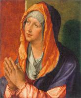
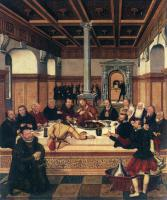
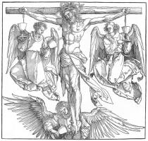
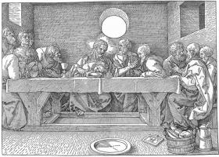
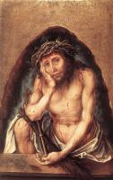
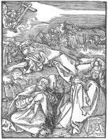

Christian Art: English
Old Testament

Adam & Eve (36)

Creation of the World (7)

David (9)

Judith (8)

Moses (3)

Noah (3)

Prophets (26)

Scenes from the Old Testament (33)

Solomon (4)
New Testament

Apocalypse (25)

Apostle Paul (10)

Apostle Peter (11)

God the Father (3)

John the Baptist (20)

Last Judgment (11)

Pentecost (4)
Scenes from the New Testament (29)
Virgin Mary

Annunciation (32)

Assumption (15)

Coronation of the Virgin (12)

Portrait of the Virgin (11)
Portrait of the Virgin (11)

Scenes from the life of the Virgin (21)

Virgin & Child (206)

Virgin’s parents (7)
Jesus Christ

Adoration to Child (36)

Ascension (3)

Baptism of Jesus (3)
Baptism of Jesus (3)

Crucifixion (59)
Crucifixion (59)

Entry into Jerusalem (2)

Jesus portrait (25)

Jesus’ parables (6)

Lamentation over Christ (43)

Last Supper (8)
Last Supper (8)

Man of Sorrows (8)
Man of Sorrows (8)

Ministry of Jesus (37)

Nativity (19)

Passion of the Christ (73)
Passion of the Christ (73)

Presentation in the Temple (7)

Resurrection (26)

Transfiguration (3)
Christianity

Angels (19)

Church (35)

Hell (9)

Paradise (6)

Saints (249)

St Francis (44)

Trinity (10)

Vices (16)

Virtues (25)
Artists
A
Pieter Aertsen (8)
Angelos Akotantos (16)
Albrecht Altdorfer (24)
Fra Angelico (146)
Ulrich Apt (2)
B
Derick Baegert (7)
Hans Baldung (26)
Jan de Beer (6)
Jehan Bellegambe (4)
Ambrosius Benson (16)
Willem Benson (3)
Hieronymus Bosch (44)
Hans Burgkmair (46)
C
Robert Campin (19)
Petrus Christus (17)
Joos van Cleve (38)
Colijn de Coter (10)
Michiel Coxie (13)
Lucas Cranach the Elder (193)
D
Duccio (80)
Albrecht Dürer (92)
G
Giotto (162)
M
Michelangelo (36)
P
Georg Pencz (8)
R
Raphael (117)
Andreas Ritzos (9)